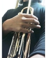

というわけで喇叭を持って旅に出ます、多分一ヶ月ほど。探さないでくださいw
なんてね。まあ籠って練習の期間です。
"But Not For Me"、"Summertime"、"There Will Never Be Another You"、"Bye Bye Blackbird"、"Autumn Leaves"、"The Girl From Ipannema"、"Bag's Groove"、"Straight No Chaser"、"Billie's Bounce"
これだけを外に出られる機会があれば、吹きまくってあっちょんぶりけーになるまで吹く。
結構曲数があるなあ。これならセッションでも困らないはずだな。